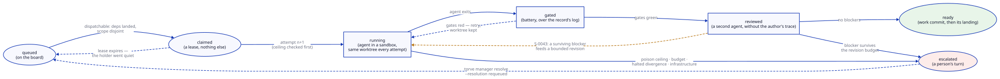

The execution model¶
A task's life, and what each step writes down.

Mint — the task joins a partition¶
torve plan <spec> turns one accepted, committed specification into task
contracts, deterministically: no model is called at any point. The contract
carries the scope it may touch, the decisions it inherits with the grades
they had at mint time, the acceptance commands, and the seat it runs on.
Minting onto a board is the manager's act. A contract the repository already landed is minted and recorded as landed, from git's own trailer — a repository carries every contract it ever executed, and a board that called those queued would hand a worker somebody's finished work.
Claim — one task, one worker, one lease¶
A task is dispatchable when this partition's board carries it as queued, its
dependencies have landed (a run that reached ready without landing
satisfies nothing — S-0019/A-3, S-0019/A-4), and nothing sharing its scope is in flight
(S-0019/A-6). Scope disjointness is conservative: what is provably shared
serializes, and an unconstrained allow-set clashes with everything, because
a task that may touch anything can prove itself disjoint from nothing.
The claim is a lease and nothing more. If the worker dies, the manager notices the claim has gone quiet past its lease and releases it with the reason recorded — activity means any recorded fact, never a heartbeat the holder sends, because a wedged process can report itself healthy.
Attempt — the agent in a sandbox¶
Each attempt gets a fresh container over the task's worktree. What the agent receives is composed by the engine: the prompt, the role's skills written from package data, the decisions it inherits, and — when a previous attempt was reviewed — the feedback record.
What it does not receive is a credential. Under the broker the sandbox holds no provider key and no store credential; it reaches models through one loopback route per routed provider, with the key injected at the wire and every response metered.
Two things an agent is expected to do from inside:
torve log divergence T-0142 --decision D-3 --grade LOCKED \
--kind contradicted --class spec-gap \
--claim "..." --evidence "path:line — what that line shows" --action halted
torve log owed T-0142 --touched src/app/session.py
The first records a divergence through the channel; the engine writes the log file, so unparseable YAML and unstaged logs are not reachable states. The second answers which LOCKED decisions the changed files touch with no entry citing them — the same check the gate convicts on, asked while the agent can still answer it. Silence over a governed file is the single most common way an attempt is thrown away.
Gates — the battery judges the diff¶
The battery runs in its own sandbox over the worktree, against the config hash of the regime it ran under. Before it reads anything, the engine rewrites the worktree's divergence log from the record, so what the gate judges is what the store holds and not whatever the sandbox left behind.
A red battery does not end the run. The loop retries under the poison ceiling and the task's own budgets, and a gate-red conviction can route the next attempt to a different tier. What ends a run is the ceiling, a budget, a halted divergence entry, a surviving review blocker, or an infrastructure failure — each with its own escalation reason.
Review — a second run over the candidate¶
With review configured, green gates mint a review task: a different agent, isolated from the executor, judging the candidate diff without the author's trace. Its findings gate the merge lane. A surviving blocker escalates the target rather than landing it.
Landing — the commit is the engine's¶
The runner composes the commit, not the agent: the author is the agent
identity, the trailers carry task, attempt, agent, config hash and the
decisions inherited, and the signing key never enters a sandbox. That
trailer is what makes a landing findable years later by anything that can
read git. The committer is Torve <torve@local> on an unsigned commit and
the key owner's identity, as the host's git config states it, on a signed
one: a forge verifies an SSH signature against the account that holds the
key through the committer's email, so who wrote the change and who attests
it are two facts on every landing.
A landing is not a push. The commit lands on the task branch and the
candidate waits at ready for the serialized lane, which is torve merge
by default — a human act, and the recorded approval.
A manager pass can call that same lane as a leg, when promotion.auto_merge
arms it. The leg is a caller and not a policy: same process_lane, same CI,
approvals, review and quiet-window refusals, so nothing is gated twice and
no refusal changes because a pass asked instead of a person. It runs after
the relay and before the mint — a candidate that went green an hour ago is
owed its landing more than an unminted contract is owed its board row, and
landing first means the mint that follows reads a base that already moved.
A pause stops it. The relay runs during a pause because it delivers what is already owed; landing advances the repository, and a pause says nobody has capacity to look at what advancing produces.
Escalation — the engine hands it to a person¶
Every ending that is not a landing is an escalation with a reason from a
closed vocabulary. The board shows it, the worktree is kept for triage, and
torve manager resolve is how a person hands the task back: requeued,
abandoned, or landed by hand. Only an operator may write that.
What one dispatch records¶
For a task that took two attempts and landed:
task.minted → task.claimed
→ attempt.started(1) → seat.consumed × n → attempt.finished(1) → gates.evaluated(1, red)
→ attempt.started(2) → seat.consumed × n → divergence.recorded × k
→ attempt.finished(2) → gates.evaluated(2, green)
→ landing.recorded
Each attempt carries the tier that actually ran it, its own gate verdict and its own spend. That is the difference between "this dispatch took two tries" and "here is what changed between them".